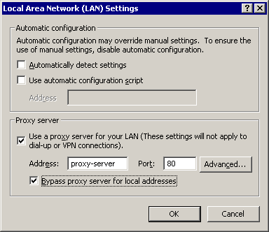
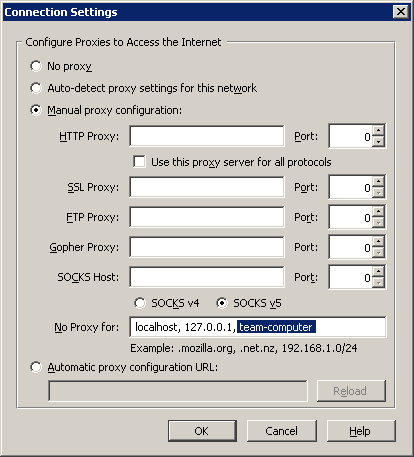

The Team Dashboard provides many services to team members, such as the ability to join a team project or view the team project plan. These services are generally reached by pointing your Web browser at an appropriate URL.
If you are unable to view a URL given to you by your team leader, try the steps below to resolve the problem.
http://team-computer:3000/...
The URL will begin with the characters "http://"
and will then have the name of your team leader's computer, followed
by a colon (:) and a number. The team computer name may
include several words separated by periods (.). Copy down
this team computer name, as the steps below will require
it.

ping team-computer
replacing the highlighted letters with the name of the team computer
you copied from the team project URL.
Reply from 10.20.30.41: bytes=32 time<10ms TTL=128then more serious network connectivity issues are most likely to blame. Contact your local IT support staff for help.
Unknown host team-computer
then your computer is having trouble finding the IP address of the
team computer. You may be able to work around the problem by
using an IP address directly. Contact your local support staff
and ask them to help you look up the IP address of your team
leader's computer - it will be a number like
10.20.30.40. Then edit the URL you are trying to visit,
replacing the computer name with the IP address:
http://10.20.30.40:3000/...
Request timed out.then there is no network connectivity between your computer and the team leader's computer. If the team leader indicates that their computer is connected to the network, then more serious network connectivity issues are most likely to blame. Contact your local IT support staff for help.